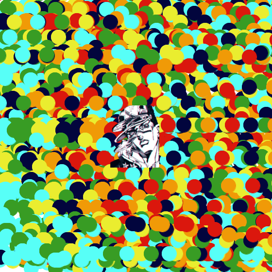
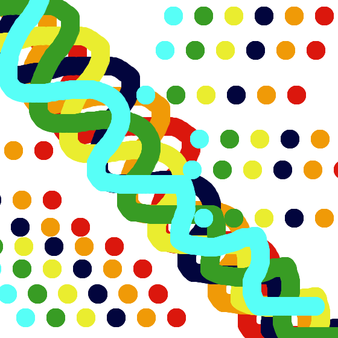

David Zenteno - Project 1
Exercise 1
This is the first sketch I have done using Processing. I have experience with programming but
using it for art is a bit new to me. What helped me understand processing
functions was their website reference page.
In this sketch I used the for loop, if else conditions, PIE,
fill, stroke, and basic shapes. I was trying to create a visualization of
a microchip at work.
see code

Exercise 2
For this sketch, I implemented mouse movement to make an image follow your mouse, ++ and -- operators were used to make the text move, and key events to make text and images to appear. I also used PFont, PImage, tint(), pmouseX, pmouseY, and counter. I recreated the vaporwave genre that was popular in the early 2010's. The images , color schemes, and text I used all recreate a nostalgic feeling, which is the core aesthetic of vaporwave.
play videosee code

Exercise 3
For the final sketch, I wanted to create two monkeys encountering paradise, a temple of bananas. This sketch was difficult at first, because I didn't understand how to use pushMatrix and popMatrix, but after some practice and tutorials, I was able to create this sketch by implementing custom functions, rotate, translate, pushMatrix, and popMatrix to make the background bananas translate down and spinning, and to create the two monkeys.
play videosee code

Project 1
For this first project, the objective was to create a drawing system with custom tools
and then use them to create drawings. I created a total of 14 brushes. My goal for these
brushes was to make them all stand out and be colorful. I succeeded and was able to
create what I envisioned. I mostly use the polka dot, random rectangles, and random circles
brush because of how quick and easy they are to use. I am able to use these brushes because
of the 8 functions I created. These functions are drawLine, drawThiccLine, polkaDot,
polkaDotSideways, drawSquare, drawCircle, changeBKGD, and eraser.
see code
img 1 
{kind=link}
img 2

img 3 
{kind=link}
img 4

img 5